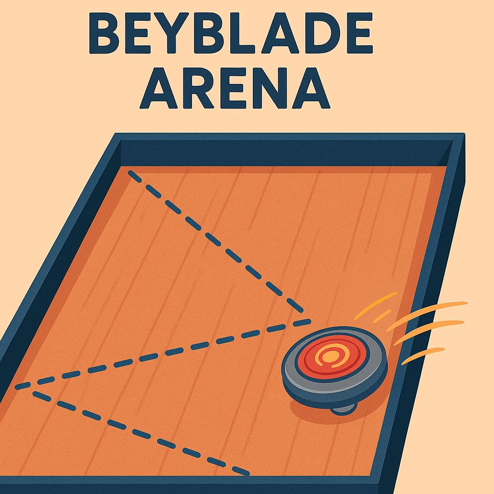

A beyblade is spinning inside a rectangular arena. It moves diagonally and bounces off the arena walls. Where will it stop after a given number of moves?
You are given a rectangular arena of size n by
m. The beyblade starts at position (x, y) within the
arena.
At each time step, the beyblade moves diagonally by updating its position from (x, y) to (x + 1, y + 1). This is its initial velocity: (+1, +1).
If the beyblade hits a wall of the arena, the direction along the corresponding axis reverses. For example, if it hits the left or right wall, the x-direction changes sign; if it hits the top or bottom wall, the y-direction changes sign.
The valid positions in the arena are those where 1 ≤ x ≤ n and 1 ≤ y ≤ m.
After k moves, the beyblade stops. Your task is to determine its final position.
The input consists of a single line with five integers: n, m, x, y, and k, separated by spaces.
Constraints: 1 ≤ n, m ≤ 100,000; 1 ≤ x ≤ n; 1 ≤ y ≤ m; 1 ≤ k ≤ 1,000,000,000.
Print a single line with two integers, the final coordinates x and y of the beyblade after k moves.
3 3 2 2 1
3 3
3 3 2 2 2
2 2
3 3 2 2 3
1 1
The beyblade spins along the path (2, 2), (3, 3), (2, 2), (1, 1), at which point it loops and goes back to the beginning.
After 3 moves, it ends in position (1, 1)
3 3 1 2 3
2 1
The beyblade spins along the path (1, 2), (2, 3), (3, 2), (2, 1), at which point it loops and goes back to the beginning.
After 3 moves, it is in position (2, 1).
Uma beyblade está a girar dentro de uma arena retangular. Move-se na diagonal e rebate nas paredes da arena. Onde irá parar após um determinado número de movimentos?
É-lhe dada uma arena retangular com dimensões n por m. A beyblade começa na posição (x, y) dentro da arena.
A cada instante de tempo, a beyblade move-se na diagonal, atualizando a sua posição de (x, y) para (x + 1, y + 1). Esta é a sua velocidade inicial: (+1, +1).
Se a beyblade atingir uma das paredes da arena, a direção ao longo do respetivo eixo inverte-se. Por exemplo, se atingir a parede esquerda ou direita, a direção do eixo x muda de sinal; se atingir a parede superior ou inferior, a direção do eixo y muda de sinal.
As posições válidas na arena são aquelas em que 1 ≤ x ≤ n e 1 ≤ y ≤ m.
Após k movimentos, a beyblade para. A sua tarefa é determinar a posição final.
A entrada consiste numa única linha com cinco inteiros: n, m, x, y e k, separados por espaços.
Restrições: 1 ≤ n, m ≤ 100.000; 1 ≤ x ≤ n; 1 ≤ y ≤ m; 1 ≤ k ≤ 1.000.000.000.
Imprima uma única linha com dois inteiros, as coordenadas finais x e y da beyblade após k movimentos.
3 3 2 2 1
3 3
3 3 2 2 2
2 2
3 3 2 2 3
1 1
A beyblade gira ao longo do percurso (2, 2), (3, 3), (2, 2), (1, 1), a partir do qual entra num ciclo e volta ao início.
Após 3 movimentos, termina na posição (1, 1).
3 3 1 2 3
2 1
A beyblade gira ao longo do percurso (1, 2), (2, 3), (3, 2), (2, 1), a partir do qual entra num ciclo e volta ao início.
Após 3 movimentos, está na posição (2, 1).
Content by Fernando Silva and Vanessa Silva (DCC/FCUP), copied from the original website.